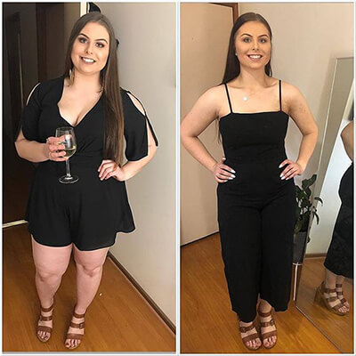

EXCLUSIVO: Nuevas "gotas de esbeltez" superaron todas las clasificaciones de popularidad en nuestro país. La madre de dos niños de la ciudad de Alicante comprobó el producto y por su cuenta perdió 20 kg en 4 semanas!
Recibimos comentarios de María con los detalles de esta historia sensacional de pérdida de peso. Para nuestros lectores, nuestros editores decidieron ilustrar todos los detalles de la nueva dieta con las cápsulas Caralean y averiguar si realmente son tan efectivos como dicen.
Un periodista Lucia
está explorando un medio inusual para perder peso, que cada vez es más popular en nuestro país.
La salud de nuestra madre
En los últimos tres meses, nuestros lectores simplemente se han vuelto locos con la nueva sensación de Internet: cápsulas naturales con el cactus comestible Caralean. Estas cápsulas ya han ayudado a miles de mujeres en todo el mundo a reducir drásticamente su peso y eliminar los depósitos de grasa en el área abdominal. Este revolucionario sistema de pérdida de peso, denominado "Santo Grial de la pérdida de peso", se ha convertido en el tema más comentado en varios programas de televisión. Como resultado, resultó que Caralean es un producto 100% natural disponible para la compra de todas las mujeres.
Muchas celebridades extranjeras, como Vicki Pattinson, Jessica Simpson, Ricky Gervais y John Hill, lograron perder peso usando solo estas cápsulas. Su fantástico efecto ha sido clínicamente probado. No solo queman rápidamente toda la grasa almacenada, sino que también limpian el cuerpo de toxinas, lo rejuvenecen y aceleran significativamente el metabolismo. Todo esto es para que el cuerpo en el futuro ya no acumule reservas de grasa.
Como se encuentra a menudo en nuestros estudios sobre los diferentes métodos de pérdida de peso, el mismo proceso de pérdida de peso es una tarea muy difícil, y los resultados a menudo son pequeños o temporales.
Sin embargo, después de una extensa investigación y entrevistas con personas que toman Caralean, nos dimos cuenta de que esto es realmente un gran avance en dietética. Siga leyendo y descubra por qué dedicamos un número especial a este método.
Ultimas noticias
¡Muchos no pierden peso debido a la falta de ciertos ingredientes en su dieta!
A diferencia de los suplementos modernos, Caralean puede hacer maravillas en términos de pérdida de peso y modelación corporal. Combinando la ingesta de estas cápsulas y la dieta correcta, puede perder hasta 20 kg en dos meses.
Se ha demostrado clínicamente que las cápsulas de Caralean contienen solo ingredientes naturales y seguros para el cuerpo: extractos de caralluma fimbriata, gymnema sylvestre, momordica (vitamina C y betacaroteno), bromenalina de piña, L-carnitina, vitamina B12.
Lo que otros dicen

Todos mis amigos me cuentan sobre las cápsulas mágicas de Caralean. Tengo problemas con el sobrepeso desde la escuela secundaria, así que puedes imaginar cuántos años he estado soñando con sentirme bien y hermosa, como mis amigas delgadas. Gracias a sus recomendaciones, también probé cápsulas Caralean, porque no tengo tiempo para practicar deportes y estoy en contra del ayuno y las dietas. En primer lugar con Caralean, perdí 12 kg y mi figura ahora es simplemente perfecta. ¡Realmente amo mi nuevo cuerpo!
Julia, Ciudad-Caceres
leer más >>>
Después de 25 años, comencé a tener problemas con el sobrepeso. De ser un tipo delgado y guapo hace poco más de medio año, me convertí en un hombre gordo. No sé exactamente qué me afectó tanto, pero honestamente intenté volver a mi peso anterior. Y solo cuando me inscribí en el gimnasio, aprendí de mi entrenador sobre estas cápsulas mágicas de Caralean. Las bebí tres veces al día. Los resultados son simplemente sensacionales: arrojé más de 11 kg en 4 semanas. ¡Muchas gracias!
Sergio Ciudad - jaen
leer más >>>
Soy madre de tres hijos y me desgarran diariamente entre miles de casos: trabajo, hogar, niños y otras preocupaciones diarias ... ¡Simplemente no tuve tiempo para hacer mi figura! Gracias a mi amigo, me dio estas cápsulas porque sabía que No estoy contento con mi peso. ¡Dios, hicieron un milagro! Perdí 3 kg en la primera semana. Un mes después no podía creer que finalmente parecía que había soñado durante mucho tiempo.
Esther, Ciudad - Cadiz
leer más >>>

"¡Aquí he perdido 13 kg!", Dice Beatriz
Pedir Caralean!
La razón por la cual la mayoría de las dietas, en nuestra opinión, fracasan, es que imponen restricciones poco realistas sobre nuestra manera de vivir. Algunos dicen que necesitamos comer mucha proteína, otros destacan la importancia de los carbohidratos. En ambos casos, debe hacer un cambio bastante brusco en sus hábitos alimenticios.
En este número especial, consideraremos en detalle el sistema de pérdida de peso ganadora, que no requiere dietas ni deportes, y, lo que es más importante, no daña el cuerpo. Consideramos que esto es una verdadera revolución en el enfoque de la pérdida de peso.
Seguramente has oído hablar de las famosas cápsulas de Caralean en la televisión. Contienen extractos naturales de caralluma fimbriata, gymnema sylvestre, momordica (vitamina C y betacaroteno), bromalina de piña, L-carnitina, vitamina B12.
Todos estos ingredientes están destinados a quemar el exceso de grasa y acelerar el metabolismo.
Los estudios realizados en el prestigioso centro de investigación de UCLA en Los Ángeles (EE. UU.) Sobre cápsulas de Caralean mostraron que con el uso regular, este medicamento puede acelerar el metabolismo y la capacidad del cuerpo para quemar grasa en un 318%.
Sin embargo, el problema es que después del éxito de Caralean, aparecieron muchas falsificaciones en el mercado, que son completamente ineficaces en comparación con el original.
La efectividad de las cápsulas Caralean originales superó todas las expectativas. Las personas que usan las cápsulas de Caralean como tratamiento, han podido perder peso significativamente, se vuelven más enérgicas y activas. Pero, si eres escéptico, entonces no estás solo. Nosotros también, cuando escuchamos por primera vez acerca de estas sensacionales caídas, no creímos inmediatamente en su efectividad.
Sin embargo, después de haber decidido que esta tendencia general merece nuestra atención, comenzamos a estudiar las historias de personas que perdieron peso con Caralean. Especialmente nos interesaba el hecho de que estas personas no cambiaran su forma de vida.

El resultado de una dieta con Caralean: ¡nuestros lectores perdieron al menos 7 kg en solo un mes!
Una de nuestras lectoras, ..., dice que perdió más de 20 kg en solo 5 semanas con las gotitas de Caralean. En su blog escribió:
«No podía creer lo fácil que era, no cambié mis hábitos, pero la grasa se derritió como la mantequilla, ¡adoro este producto! ¡Finalmente, encontré una herramienta que funciona»
Comentarios de nuestro otro lector Josefa:
Fui elegida para probar las cápsulas naturales de Caralean, porque quería tirar unos 10 kilogramos durante la boda, que tendría lugar en 3 meses. Me hicieron el pedido del tratamiento con Caralean, y lo trajeron en un par de días.
Confié fácilmente en el Caralean, porque tenía buenos resultados en ensayos clínicos, y fue aprobado por laboratorios de investigación con estrictos requisitos de control y calidad del producto. Como me informaron, este es uno de los productos más concentrados y puros para perder peso en el mercado.
Cientificamente demostrado que Caralean:
- Normaliza los estados Hormonales;
- Regulariza los procesos metabolicos fortalece la piel, el cabello y las uñas;
- Regula el metabolismo, promueve una mejor absorción de nutrientes;
- Reduce el nivel de colesterol, regula el trabajo del tracto gastrointestinal;
- Elimina toxinas y toxinas, quema grasa y activa el proceso de reparación celular.
Tomé cápsulas de Caralean tres veces al día con un vaso de agua durante un mes.
Mis resultados: Perdi mas de 12 kg en un mes, Reduciendo casi 3 tallas. Estoi dispuesta a llorar de felicidad. "

Primera semana:
Después de una semana de usar las cápsulas, me sorprendió lo rápido que empezaron a funcionar. También me volví más enérgico y casi no quería comer - Caralean reduce el apetito y los antojos de los dulces.
Me sentia esplendida!
Pero lo principal es que no cambié nada en mi vida diaria. El séptimo día subí a la báscula y no podía creer lo que veía. Perdi 5 kg! Pero no me alegre demasiado, porque me dijeron que lo primero que se pierde es el exceso de líquido que se elimina del cuerpo. Decidí ver qué pasaría despues con mi peso.
Segunda semana:
Después de la segunda semana me volví aún más enérgico, y mi estado de ánimo mejoró. Otra ventaja: comencé a dormir bien y nunca me despierto por la noche. Además, quedaban 2 kg, en solo 2 semanas perdí 7. Entonces comencé a entender que Caralean no es solo una especie de truco publicitario, sino una herramienta realmente funcional.
Tercera semana:
Despues de la 3 semanas todas mis dudas desaparecion. Perdí otros 2 kg y me di cuenta de que, en general, ¡perdí 2 taya! Y también tenía mucha energía, aunque generalmente al final de la tercera semana de dieta el cuerpo se agota, pero con Caralean resultó todo lo contrario: solo se volvió más fuerte. Otra buena observación: el proceso de digestion mejoro, y la hinchazón desapareció.
Сuarta semana:
Después de la cuarta semana, los resultados finales fueron increíbles, menos 12 kg por 1 mes de Caralean. Los resultados son reales. Impresionante !! En la junta editorial de Moms Health, todos me felicitan y lamentan que ellos mismos no hicieron el experimento. Por supuesto, yo, por un lado, no tenía mucho exceso de peso, por otro lado, estoy feliz de haberme vuelto mucho más delgado y con más energía.
Por un tiempo, definitivamente continuaré tomando Caralean ya que estas gotas contienen muchos antioxidantes y vitaminas que retrasan el envejecimiento y hacen que la piel esté radiante.
En mi nuevo cuerpo delgado, me siento absolutamente feliz.
¡Y el vestido de novia me sienta muy bien!

Perdí 12 kg en 4 semanas sin hacer dieta y ejercicios especiales.
En conclusión, si todavía dudas de la efectividad de Caralean, debes intentar creer; Nuestra prueba mostró que los resultados son reales. En el consejo editorial de Mom's Health estudiamos más de 100 dietas al año, e incluso si al principio teníamos dudas, rápidamente nos convencimos de que Caralean realmente funciona. Después de nuestra investigación, nos complace anunciar que la prueba fue exitosa.
IMPORTANTE: * Durante los ensayos clínicos, se ha demostrado que, para lograr resultados similares, el producto debe usarse REGULARMENTE.
50% De descuento
para nuestros lectores !
¡Utilice nuestro ENLACE EXCLUSIVO y obtenga un descuento hoy!
Pedir ahora!
Chicas, no solemos escribir informes de este tipo, pero este producto es demasiado bueno para esconderla de las personas.
Pruebalo y dime lo que piensas!
Nos interesa vuesta opinion!
El número de productos de oferta es limitado. Los descuentos todavía están disponibles 13.12.2019
Сomentario:
Laura
Escrito hace 1 hora
¡Acabo de empezar a tomar Caralean! Solo ha pasado una semana, y ya me siento más activa y llena de energía. Afortunadamente, encontré este sitio de forma independiente por casualidad, y pedí estas cápsulas con un descuento también. Entonces, al menos, no pagaré el precio completo por algo que podría no funcionar. Aunque todavía espero perder peso con estas cápsulas)
Maria Rosa
Escrito hace 1 hora
Compro muchas cosas online, y es tan extraño que nunca antes había oído hablar de Caralean. ¡Qué historia tan fantástica!
Gracias por el apoyo! Ya los ordené y haré ejercicio para obtener mejores resultados :)
Carlos
Escrito hace 2 hora
Hola a todos! Vi las gotas en la televisión, y las pedire mientras la oferta sea actual. Pero por favor aclare, por favor, siempre que el producto funciona para los hombres. No te olvides de nosotros la próxima vez, jaja!
Juan
Escrito hace 2 hora
Mi marido y yo encargamos y probamos el producto, gracias.
Montse
Escrito hace 3 hora
Mi madre fue informada acerca de este producto en el trabajo. Creo que funciona bien.
Concepcion
Escrito hace 3 hora
Pedí estas gotas hace 3 semanas, aunque todavía no había stock en ellas. Pero los resultados son realmente increíbles, ni siquiera pensé que los remedios naturales podrian ser tan efectivos.
Ana
Escrito hace 4 hora
¿Es realmente 100% natural? Lo probare en este caso, no tome ningun producto quimico y no tome medicamentos.
Leandro
Escrito hace 4 hora
¡Acabo de comenzar a tomar estas cápsulas! Solo pasó una semana, pero realmente me volví más enérgico y activo.
Jesica
Escrito hace 4 hora
Excelente motivación para cualquiera que no pueda perder peso. ¡Quizás yo también siga tu ejemplo!
Carmen
Escrito hace 5 hora
¡Ni siquiera imaginé que se puede obtener esos resultados! ¡Me pedí un remedio debido a tu enlace!
Alba
Escrito hace 5 hora
¡No quiero perderme esta oferta! Envien el enlace, por favor
Silvia
Escrito hace 5 hora
Compre solo de fabricantes oficiales aquí, las falsificaciones no funcionan para nada